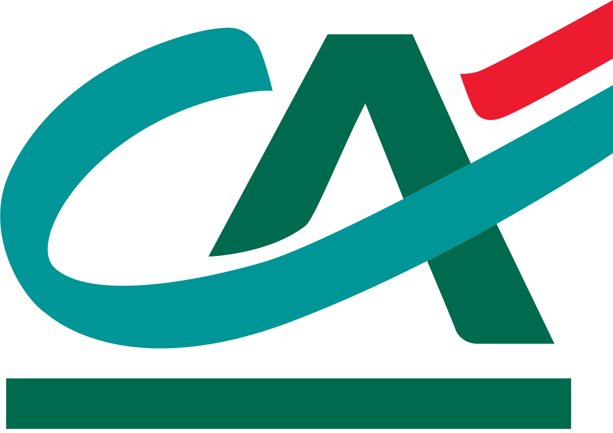

Recherche | Ateliers | Conception | Tests
SimulADE
Un outil pour simuler son assurance de prêt

MISSION
Concevoir un outil adapté à la fois aux conseillers Crédit Agricole en agence et aux clients en autonomie.
L’objectif étant de permettre aux clients qui le souhaitent de simuler leur assurance de prêt seuls hors agence.
PROJET
2017-2018, 5 mois
Mission en plateau
Design sprint
Equipe MOA/MOE/Développeurs
CE QUE J'AI FAIT
Recueillir les besoins clients et l’existant
Poser les parcours généraux (outil connecté et déconnecté / outil client vs outil conseiller)
Réaliser des wireframes
Animer des ateliers d’idéation en interne (PO, market, dev)
Préparer et animer des ateliers de co-conception avec les conseillers et clients du Crédit Agricole
Préparer et suivre des tests utilisateurs (guide d'entretien, restitution)
Briefer et suivre le travail du directeur artistique
Suivre les design sprint
Recherche
Recueil des besoins clients
Définition de l'arborescence de l'outil
Matérialisation des différents parcours possibles :
Nouvelle simulation, dossier existant, parcours débuté en agence
Expérience map pour identifier les usages et lister les points bloquants

Conception
Création d'un outil déconnecté réservé aux conseillers
Objectif : récupérer un dossier existant ou en créer un avant d’accéder à l’outil de simulation
Faciliter l'utilisation avec :
- une recherche par onglets pour offrir une vision globale des actions possibles
- une navigation simplifiée (choix d’un retour menant à l’action précédente et non à la page précédente)
- des tableaux de résultats scrollables pour accéder rapidement aux informations recherchées
- un système de filtre pour simplifier la recherche entre les différentes bases de données mises à disposition
- une recherche de personne avant toute création de dossier pour éviter le doublonnage
- des formulaires pré-remplis dans le cas de dossier déjà existant
Conception
Création de l’outil connecté de simulation accessible aux conseillers et aux clients
Faciliter l'utilisation avec :
- un accès omniprésent à de l'information sur l'assurance emprunteur
- un parcours guidé grâce à un étapier
- une navigation par onglets en cas de co-emprunteurs
- des infobulles contenant des témoignages pour aider les utilisateurs à répondre au questionnaire
- des infobulles explicitant chacune des garanties au sein des tableaux d'offres
- un simulateur de quotités pour moduler son offre en toute connaissance de cause
- un récapitulatif exhaustif en fin de parcours
- des informations explicites sur les prochaines étapes avant l'adhésion

Conception
Réflexion autour de la présentation et de la personnalisation de l’offre
Comment agencer les garanties ?
Comment symboliser ce qui est compris dans l’offre et ce qui ne l’est pas ?
Comment schématiser les garanties minimales donc obligatoires ?
Comment apporter de l’information sur les garanties ?
Comment personnaliser facilement l’offre ?
Comment positionner le prix dans le tableau ?
Comment, dans le cas de co-emprunteurs, rendre visible le choix d'une offre pour chacun ?


{kind=link}
Tests utilisateurs
Plusieurs sessions de tests réalisées pour :
- valider les choix opérés
- identifier les freins à l’usage
- tester la compréhension de l'outil
4 parcours, 2 présentations de l'offre, des testeurs seuls et d'autres en couple
Réalisation d'un prototype, suivi des tests, réalisation et présentation de la restitution
Accéder au protoype >